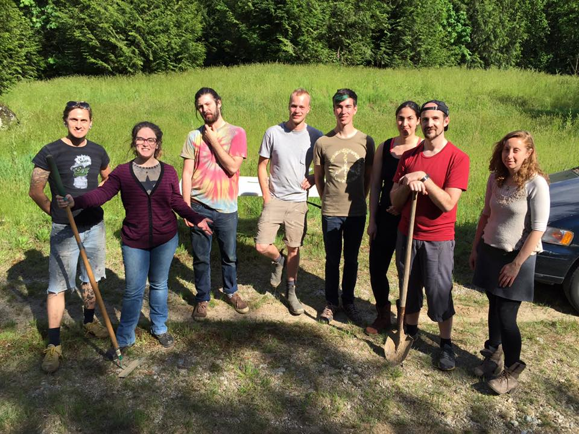
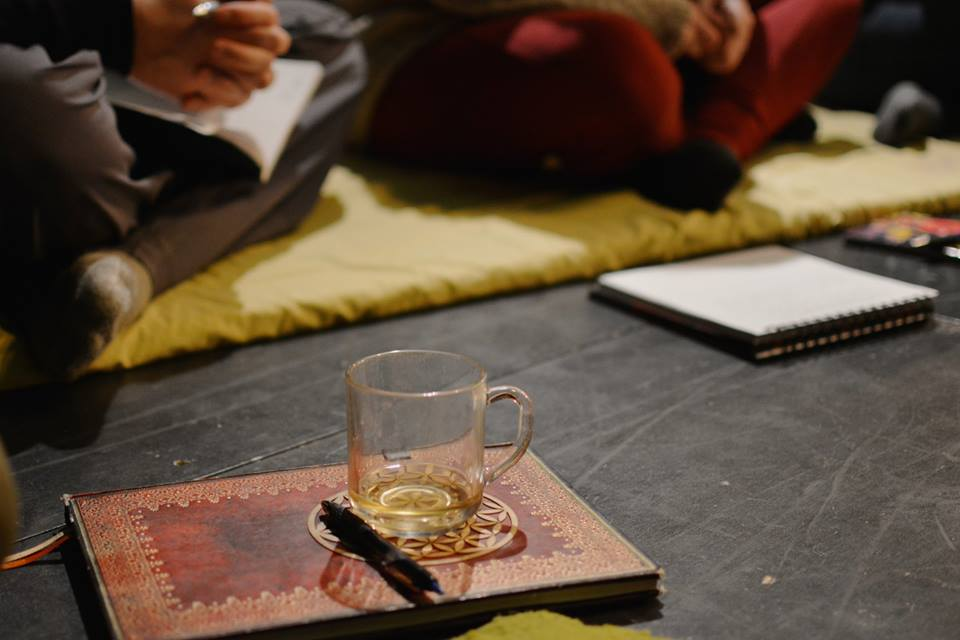

Current Projects
Resurgence
Intention is one of the only consensus-based participant driven and volunteer-run conscious local summer gatherings. I joined the Intention Community over a year ago and first stepped in as an organizer for Resurgence in January 2016. My main focus in Resurgence this summer revolves around Workshop Coordination as well as recruiting and leading First Aid volunteers.
Doing this work has given me the opportunity to connect to amazing workshop facilitators and also to learn more about putting different offerings in a way that is harmonious and in line with the core values that Intention stands for: consent-based, volunteer-driven and co-created.
Sense Workshop Series
I have been working along with Loretta Laurin, founder of Sense, and maintaing communication with all workshop facilitators regarding their needs as well as maximum capacities. I also keep the registration sheet up to date and update drop-ins on availability.
Working on the administrative aspect of running Sense has given me insight into the importance of having excellent written communication skills and also the importance of problem-solving and reasoning that my Mathematics background has to offer. One example of this includes finding structured ways (i.e. spreadsheets, data analyzing, graphs) to otherwise messy ways of learning more about drop-ins and the way participants distribute.
Synaesthesia Creates
I am currently taking the Summer to improve my Web Development skills through online courses as my goal is to build an online platform for synaesthetes to connect and share their gifts.
As a synaesthete, I know it is common for people with this neurological condition to be laughed at or not validated in their experiences. I personally think that celebrating our quirks is what allows us to create beautiful things and I want to contribute in this by providing a space for people to share what makes them unique.
Through this website I will also post relevant information on Workshops whose theme is synaesthesia and the expression of one's Self through music, dancing and painting.
Workshop Facilitation
The main reason I have been so involved in the administration aspect of running workshops for Sense as well as the organization of workshops for Resurgence is because I would like to facilitate a series of workshops on Synaesthesia and Creativity.
My goal is to first learn from those who have facilitated workshops on a wide range of topics and also learn the administration parts that usually occur behind the scenes.
This is the sort of endeavour I am taking time to explore and develop, but I am keen on letting it take its time to grow. I continue to appreciate those whose work around facilitation have left a mark on my mind and heart, while also reaching out to learning resources on the topic.